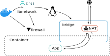

Container und Container Images
Was verbirgt sich dahinter?
who -u
Dan Čermák
| Software Developer @SUSE | |
| i3 SIG, Package maintainer | |
| Developer Tools, Testing and Documentation, Home Automation | |
| https://dancermak.name | |
| dcermak | |
| @Defolos@mastodon.social | |
| @defolos.bsky.social |
Agenda
Software Delivery
- dependencies suck → bundle everything
- Can't we just ship everything?
- yes, but VMs suck as well ü´†
Let's build a container: chroot
- Create a chroot:
rsync -avz --exclude=/sysroot/ / /sysroot/ - build your app
- clean
/sysrootof everything unneeded tar -czvf my-app.tar.gz /sysroot
Let's run the container
tar -xzvf my-app.tar.gz -C /path/to/appchroot /path/to/app /usr/local/bin/my-app
Is that it?
- inconvenient build process
- no upgrade path
- data sharing?
- no security
Linux Namespaces
- kernel level resource isolation
available namespaces:
- user
- mnt
- pid
- net
- ipc
- uts
- cgroup
- time
Try it:
$ unshare --user --map-root-user \
--pid --fork --mount-proc \
/bin/bash
# whoami
root
# ps -a
PID TTY TIME CMD
1 pts/8 00:00:00 bash
104 pts/8 00:00:00 ps
cgroups
- apply resource limits to processes
- measure resource usage
# cgcreate -g memory:memlimit
# cgset -r memory.max=1K memlimit
# cgexec -g memory:memlimit ls -al
Killed
Are we there yet?
- üëçÔ∏è great process isolation
- üëéÔ∏è standardized build process
- üëéÔ∏è distribution mechanism
Introducing: Docker

docker build- Docker registry
Docker Registry
docker pull registry.opensuse.org/opensuse/leap
docker pull registry.opensuse.org/opensuse/leap:15.6
docker pull registry.opensuse.org/opensuse/leap:15.5@sha256:a5ecb8286a6a1b695acb17e63f2702be29f2a72615ec10cfb4e427e2ebc9e8ad
Container Image Build
docker build .
FROM registry.opensuse.org/opensuse/tumbleweed
COPY . /src/
WORKDIR /src/
RUN zypper -n in python3-pip; \
pip install . ; \
zypper -n rm --clean-deps gcc; zypper -n clean; \
rm -rf {/target,}/var/log/{alternatives.log,lastlog,tallylog,zypper.log,zypp/history,YaST2}
EXPOSE 80
CMD ["/usr/bin/python", "-m", "my-app"]
UnionFS
mount -t overlay overlay \
-o lowerdir=lower_3:lower_2:lower_1,\
upperdir=upper,workdir=/work/ \
merged
Dockerfile
FROM registry.opensuse.org/opensuse/tumbleweed
COPY ./project/ /src/
ENV USER="geeko"
RUN zypper -n in openssh-clients; \
ssh-keygen -t ed25519 -f /root/.ssh/id_ed25519 -N ""; \
zypper -n rm --clean-deps openssh-clients; \
zypper -n clean; rm -rf /var/log/lastlog;
VOLUME ["/src/data"]
WORKDIR /src/
EXPOSE 22
RUN useradd $USER
USER $USER
CMD ["echo hello"]
ENTRYPOINT ["/bin/bash", "-ce"]
Volumes

docker run -v /vol/:/var/db/ -v logs:/var/log $img
Entrypoint

Networking

Best Practices
RUN zypper -n in python3-pip; \
pip install . ; \
zypper -n rm --clean-deps gcc; zypper -n clean; \
rm -rf {/target,}/var/log/{alternatives.log,lastlog,tallylog,zypper.log,zypp/history,YaST2}
$ podman run -e POSTGRES_PORT=1234 \
-e POSTGRES_USER=pg \
my-app
$ podman run my-app bash
#
or:
$ podman run my-app
#
Volumes are your friend:
VOLUME ["/var/db/"]
# /var/db/ is now erased after each step!
use the exec-form:
ENTRYPOINT ["/usr/bin/my-app", "-param", "value"]
Podman
Actually Docker

Podman
Rootless Containers
- container runs as non-root or a sub-uid of your user
- rootless networking runs in userspace
Security
- container potentially as privileged as the user running it
- container breakout attacks exist
- SELinux is your friend
When to use
- Single binary
- Cloud Native Deployment
- Testing other Distributions
- Reproducible Dev/Test/Build Environment
- Base OS doesn't matter
When not to use
- Complex multi binary legacy code
- High-Performance Code
- Base OS matters
Container Orchestration

docker-compose
services:
app:
build: .
ports:
- "8080:8080"
volumes:
- .:/src
depends_on:
db:
condition: service_healthy
db:
image: registry.opensuse.org/opensuse/mariadb
environment:
- MARIADB_ALLOW_EMPTY_ROOT_PASSWORD=1
docker compose up
Quadlet / podman generate systemd
[Unit]
Description=TW container
[Container]
Image=registry.opensuse.org/opensuse/tumbleweed
# volume and network defined below in other configs
Volume=test.volume:/data
Network=test.network
Exec=sleep infinity
[Service]
Restart=always
TimeoutStartSec=900
[Install]
# Start by default on boot
WantedBy=multi-user.target default.target
Kubernetes

apiVersion: apps/v1
kind: Deployment
metadata:
name: web-application
labels:
app: web
spec:
replicas: 3
selector:
matchLabels:
app: web
template:
metadata:
labels:
app: web
spec:
containers:
- name: web-container
image: nginx:latest
ports:
- containerPort: 80
resources:
limits:
cpu: "0.5"
memory: "512Mi"
requests:
cpu: "0.2"
memory: "256Mi"
livenessProbe:
httpGet:
path: /
port: 80
initialDelaySeconds: 30
periodSeconds: 10
readinessProbe:
httpGet:
path: /
port: 80
initialDelaySeconds: 5
periodSeconds: 5
Should I use containers?
It depends
Questions?